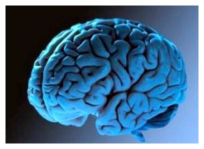

Шизофренія (від дав.-гр. σχίζω — розколюю і φρήν — розум), раніше лат. Dementia praecox («слабоумство передчасне») — психічне захворювання, що характеризується розладом розумових процесів.Вона найчастіше проявляється у вигляді слухової галюцинації та параної або дивних маній чи дезорганізованості мови і мислення. Це супроводжується значною соціальною або професійною дисфункцією. Поява симптомів зазвичай відбувається в юнацькому віці, з глобальною поширеністю упродовж життя Діагноз ставлять на підставі спостережуваної поведінки та інформації про симптоми пацієнта.

Причини виникнення
Генетика, ранній вплив навколишнього середовища, нейробіологія та психологічна і соціальні процеси, вочевидь, є важливими факторами; деякі легкі наркотики і ліки, що відпускаються за рецептом, можуть викликати або посилювати симптоми. Поточне дослідження зосереджено на ролі нейробіологічних чинників, хоча жодної точної органічної причини не знайдено. Багато можливих комбінацій симптомів викликали дебати про те, чи є діагноз одним єдиним розладом, а чи рядом дискретних синдромів. Не зважаючи на етимологію терміну, що походить від грецького коріння skhizein (σχίζειν, "«розколоти») і phrēn, phren- (φρήν, φρεν-; φρεν-; «розум»), шизофренія не означає «роздвоєння розуму», і це не те саме, що дисоціативний розлад особистості, також відомий як «роздвоєння особистості» — хвороби, з якою шизофренію часто плутають в суспільній свідомості.
Лікування
Основою лікування є антипсихотичні ліки, які в першу чергу пригнічують активність рецепторів дофаміну (а іноді й серотоніну). Психотерапія та професійна і соціальна реабілітація є також важливими під час лікування. У більш серйозних випадках — коли є ризик для себе та інших — може знадобитися примусова госпіталізація, хоча перебування у лікарні наразі коротші і рідші, ніж це було раніше.
Погіршення, хронічне захворювання
Цей розлад зазвичай впливає на пізнавальну здатність, але він переважно також сприяє хронічним проблемам з поведінкою та емоціями. Люди з шизофренією часто мають супутні хвороби, в тому числі велику депресію і тривожний розлад; частота виникнення токсикоманії упродовж життя складає майже 50 %. Поширеними серед хворих на шизофренію є такі соціальні проблеми, як тривале безробіття, бідність і бездомність. Середня тривалість життя людей з цією хворобою на 12—15 років менша, ніж у тих, у кого її немає, через частіші фізичні проблеми зі здоров'ям і вищий рівень самогубств (близько 5 %).
Симптоми
У хворого на шизофренію можуть виникнути псевдогалюцинації (більшість з них скаржаться, що чули голоси), мали манії (часто дивні або переслідуючі за природою), а також дезорганізоване мислення і мову. Останнє може виявлятися у вигляді втрати логічного мислення, речень, майже не пов'язаних за змістом і непослідовних, відомий як набір слів у важких випадках. Соціальна самоізоляція, неохайність в одязі та гігієні і втрата мотивації та ясності мислення — все це звичайні прояви шизофренії. Існує часто спостережувана картина емоційних труднощів, наприклад відсутність реакції. З шизофренією пов'язане погіршення соціального пізнання, як і симптоми параної; зазвичай має місце соціальна ізоляція. Труднощі з роботою і довгостроковою пам'яттю, увагою, регулюючими функціями і швидкістю оброблення інформації також часто трапляються. При одному із рідкихісних виявів шизофренії людина може в значній мірі залишатися німою, нерухомою в дивних позах або проявляти безцільне збудження, тобто всі ознаки кататонії. Закінчення підліткового і початок юнацького віку є піковими періодами початку шизофренії.У 40 % чоловіків і 23 % жінок з діагнозом шизофренія захворювання проявилося у віці 19 років. Щоб звести до мінімуму порушення розвитку, пов'язані з шизофренією, багато зусиль останнім часом було витрачено на виявлення та лікування фази продромального (попереднього початку) хвороби, яка була виявлена за 30 місяців до появи симптомів. У людей, в яких розвивається шизофренія, можуть виникнути короткочасні або самообмежуючі психотичні симптоми і неспецифічні симптоми соціальної ізоляції, дратівливість, дисфорія і незграбність, під час продромальної фази.Шнайдеріанська класифікація
На початку 20-го століття психіатр Курт Шнайдер перерахував форми психотичних симптомів, що, на його думку, відрізняють шизофренію від інших психотичних розладів. Це так звані симптоми першого рангу або симптоми першого рангу Шнайдера. До них належать марення, що контролюється зовнішніми силами; переконання, що думки вводяться ззовні або виводяться зі свідомості; переконання, що їхні думки транслюються іншим людям; і слухання галюцинаторних голосів, які коментують їхні думки або дії, чи які ведуть бесіди з іншими галюцинаторними голосами. Хоча вони внесли значний внесок у поточні діагностичні критерії, специфічність симптомів першого рангу була поставлена під сумнів. Огляд діагностичних досліджень, проведених із 1970 року до 2005 року, показав, що вони не дають змоги ані підтвердити, ані спростувати висновки Шнайдера, і тому було припущено, що симптомам першого рангу не слід приділяти увагу у ході майбутніх переглядів діагностичних систем.
Позитивні і негативні симптоми Шизофренію часто описують із точки зору позитивних і негативних (або відсутніх) симптомів. Позитивні симптоми — це ті, яких більшість людей зазвичай не відчуває, але вони присутні у людей із шизофренією. До них можуть належати марення, невпорядковані думки і слова, тактильні, слухові, візуальні, нюхові і смакові галюцинації, як правило, їх розглядають як прояви психозу. Галюцинації також зазвичай пов'язані зі змістом теми марення. Позитивні симптоми зазвичай добре піддаються лікуванню.
До негативних симптомів належать дефіцит нормальних емоційних реакцій або інших розумових процесів і вони менше реагують на лікування.До них належать сплощений або притуплений афект і бідність емоцій, бідність мови (алогію), нездатність відчувати задоволення (ангедонію), відсутність бажання формувати відносини (асоціальність) і відсутність мотивації (аволіція). Дослідження показують, що негативні симптоми більшою мірою впливають на низьку якість життя, функціональну інвалідність, аніж позитивні симптоми У людей із вираженими негативними симптомами часто була у минулому погана пристосовуваність ще до настання хвороби, і реакція на ліки часто обмежена.
Причин Поєднання генетичних і екологічних факторів відіграє певну роль у розвитку шизофренії. Люди із сімейним анамнезом шизофренії, котрі страждають від перехідного або самообмежуючого психозу мають на 20—40 % більше шансів отримати діагноз шизофренії через рік.